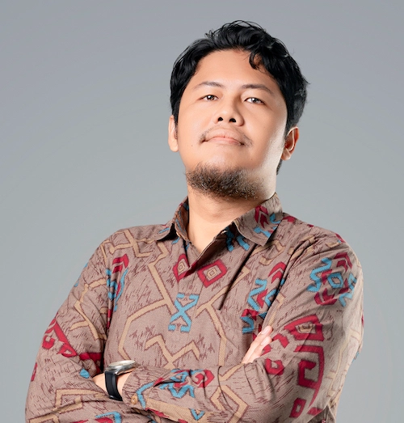

Andika
Chandra P
Saya mengajar dan meneliti teknologi informasi serta bisnis digital, dan membangun aplikasi web untuk peneliti, mahasiswa, dan pelaku usaha kecil.

Karya
Landasan TI: perangkat keras, perangkat lunak, jaringan, dan keamanan data untuk bisnis.
Smt 1 · Bisnis Digital · 2 file
Model ekonomi digital, startup, dan ekosistemnya di Indonesia.
Smt 3 · Bisnis Digital · 4 file
Prinsip perancangan antarmuka, evaluasi usabilitas, dan pengalaman pengguna.
Smt 3 · Bisnis Digital · 12 file
Design thinking, lean canvas, dan value proposition untuk bisnis digital.
Smt 4 · Bisnis Digital · 6 file
Pola keputusan konsumen di kanal mobile dan media sosial.
Smt 6 · Bisnis Digital · 3 file
Perancangan gudang data dan penyajian wawasan lewat dashboard.
Smt 6 · Bisnis Digital · 3 file
Lingkup, jadwal, biaya, manajemen perubahan, dan pendekatan agile.
Smt 6 · Teknik Informatika · 6 file
Faktor yang membuat pengguna kembali ke platform e-tourism, studi pada TripTrus.Com.
Paper · IEEE Xplore · 2017
Faktor-faktor yang memengaruhi niat berwirausaha.
Tautan artikel belum tersedia.
Artikel · SINTA 3 · 2024
Analisis performa streaming YouTube berdasarkan resolusi video.
Artikel · SINTA 3 · 2025
Klasifikasi tingkat risiko pengguna judi online dari pola perilaku dan skor PGSI.
Artikel · EBSCO · 2026
Butuh dosen tamu, kolaborasi riset, atau produk digital?
Saya terbuka untuk diskusi, pelatihan, pendampingan riset, dan pengembangan produk digital bersama institusi maupun komunitas.
Pencarian artikel open access dengan hasil yang langsung bisa disitasi.
Web app
Rekomendasi referensi dari satu kalimat yang Anda tulis.
Web app
Manajemen artikel ilmiah berbasis AI: simpan, baca, dan kutip.
Web app · AI
Repositori eksperimen web, materi kuliah, dan proyek kecil.
Kode terbuka
Homepage lama dibangun ulang dengan bahasa visual Windows 3.1.
HTML · CSS
Satu file HTML tanpa framework: token tema, grid rack, dan tema gelap-terang.
HTML · CSS · JS
Dosen, peneliti, dan pembangun produk digital.
Sehari-hari saya mengajar mata kuliah sistem informasi, interaksi manusia dan komputer, manajemen proyek, dan bisnis digital. Di luar kelas, saya meneliti perilaku pengguna, machine learning, dan socio-techno, lalu menerjemahkannya menjadi aplikasi yang dipakai mahasiswa dan peneliti.
- Machine Learning
- Web Design
- Digital Marketing
- Socio-Techno
- Human-Computer Interaction
- Pengindeks
- IEEE Xplore · SINTA 3 · EBSCO
- Publikasi
- 3 artikel & paper terindeks
- Mata kuliah
- 10 kelas lintas semester
- Kontak
- me@andikachandra.com